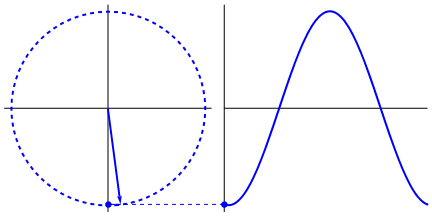

Silêncio
Arquivo WAV gerador de silêncio.

Computação Musical (CM) é um campo de pesquisa em ciência da computação com características multidisciplinares, voltado ao tratamento de elementos musicais por meio do computador.
Arquivo WAV gerador de silêncio.
Este trabalho foi feito utilizando Javascript para realizar as funções e gerar os arquivos das ondas no formato WAV. Para baixar e escutar os arquivos basta clicar no botão de Download referente a onda que você deseja. Caso queira um tempo maior de áudio, será necessário aumentar a variável numFrames no arquivo de Javascript referente a onda, exemplo: WhiteNoise.js -> var numFrames = 500000.
Foi utilizado alguns códigos de repositório do GITHub.
By Eli Grey, http://eligrey.com -- License: X11/MIT